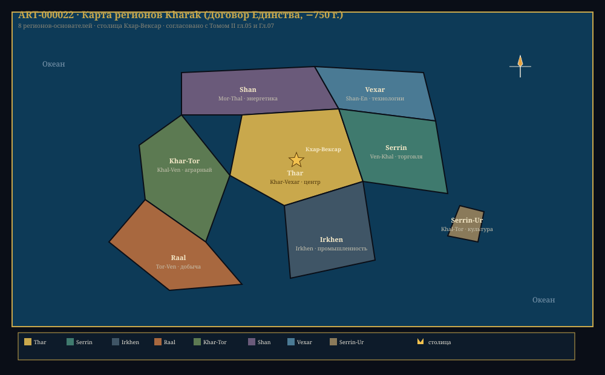

Глава 7: История цивилизации Xha'Ruun
«Двенадцать тысяч лет — достаточный срок, чтобы забыть, откуда ты пришёл. И достаточный, чтобы вспомнить, куда ты идёшь. Мы — народ, который помнит.» — Из «Хроник Вечности», Архив Первой Библиотеки, +1 200 г. Э.Е.
Связанные разделы: → см. [Гл.05, «Вид Xha'Ruun»], → см. [Гл.08, «Культура»], → см. [Гл.09, «Технологии»] Объём: 60 страниц
Введение
История цивилизации Xha'Ruun насчитывает ~12 000 лет — от первых постоянных поселений в плодородной Долине Тха́р до современного космического общества. За это время цивилизация прошла через величайшие взлёты и глубочайшие падения: объединение континентов и экологический коллапс, расцвет наук и Тёмные века, изобретение письменности и выход в космос.
История Xha'Ruun — не прямолинейный прогресс. Это скорее спираль: каждое последующее поколение стоит на плечах предыдущих, но некоторые плечи были сломаны войнами и катастрофами. И всё же — цивилизация выжила, сохранила знание и продолжает развиваться.
7.1 Периодизация
ТАБЛИЦА 7.1: Эпохи цивилизации Xha'Ruun
Эпоха Даты (годы цив.) Продолж. Характер Предцивилизационная −12 000 – −9 800 2 200 лет Первые поселения, одомашнивание, прото-искусство Ранняя цивилизация −9 800 – −6 200 3 600 лет Письменность, металлургия, города-государства Эпоха Расцвета −6 200 – −2 100 4 100 лет Первая Империя, расцвет наук и искусств Эпоха Кризиса −2 100 – −750 1 350 лет Экоколлапс, эпидемия, падение, Тёмные века Эпоха Возрождения −750 – +850 1 600 лет Второе Единство, индустриализация, космос Эра Единства +850 – наст. вр. (+4 028) 3 178+ лет Совет Единства, термояд, расселение в системе
ИСТОРИЧЕСКИЙ ТАЙМЛАЙН XHA'RUUN
−12 000 −9 800 −6 200 −2 100 −750 +850 +4 028
│ │ │ │ │ │ │
▼ ▼ ▼ ▼ ▼ ▼ ▼
┌──────┐ ┌────────┐ ┌────────────────┐ ┌──────────┐ ┌──────┐ ┌──────┐ ┌──────┐
│ │ │ │ │ │ │ │ │ │ │ │ │ │
│Пред- │ │ Ранняя │ │ Эпоха │ │ Эпоха │ │Воз- │ │ Эра │ │Наст. │
│циви- │──▶│ циви- │──▶│ Расцвета │──▶│ Кризиса │──▶│рож- │──▶│Един- │──▶│время │
│лизац.│ │ лизация│ │ │ │ │ │дение │ │ства │ │ │
│ │ │ │ │ │ │ │ │ │ │ │ │ │
└──────┘ └────────┘ └────────────────┘ └──────────┘ └──────┘ └──────┘ └──────┘
│ │ │ │ │ │ │
│ │ │ │ │ │ │
Первые Письменность Первая Империя Падение Второе Основание Космич.
поселения Золотой век Империи Единство Совета эра
Единства
Рис. 7.1. Хронология цивилизации Xha'Ruun. Шесть эпох — от первобытности до космоса.
7.2 Предцивилизационная эпоха (−12 000 – −9 800)
7.2.1 Происхождение
Первые археологические следы предков Xha'Ruun относятся к периоду ∼−15 000 г. цив. — каменные орудия (рубила, скребки) в районе Долины Тхар (континент Kharak). Гоминидная линия Thermochromadae к этому моменту уже обладала:
- Прямохождением (∼−150 000 лет)
- Увеличенным мозгом (∼−80 000 лет)
- Прото-языком (∼−20 000 лет)
- Контролем огня (∼−5 000 лет)
7.2.2 Первые постоянные поселения
∼−11 500 г. цив. — на террасах реки Кхар-Тор появляются первые постоянные поселения. Древнейшее из известных — Тхар-Векс («Дар долины», ныне археологический памятник в черте современного города).
| Поселение | Регион | Датировка | Население (оцен.) | Особенность |
|---|---|---|---|---|
| Тхар-Векс | Долина Тхар, Kharak | −11 500 | ~200 | Древнейшее |
| Кхар-Ур | Побережье Серрин, Kharak | −11 200 | ~150 | Рыболовецкое |
| Тхе-Нур | Плато Раал, Rhuval | −10 800 | ~120 | Высокогорное |
7.2.3 Одомашнивание
∼−10 200 г. цив. — одомашнивание кхарру (травоядное, аналог крупного рогатого скота). Кхарру — шестиногое животное класса Thermochromadae, дающее мясо, молоко (белковый аналог) и шкуры. Одомашнивание произошло независимо в двух регионах: Долина Тхар (Kharak) и плато Раал (Rhuval).
7.2.4 Прото-искусство
Первобытные Xha'Ruun оставили после себя наскальные рисунки в пещерах Kharak (∼−10 500 г. цив.). Изображения включают:
- Сцены охоты (гексаподальные фигуры с копьями)
- Астрономические символы (звезда с 7 лучами — ранняя форма логограммы khar)
- Абстрактные спиральные узоры (возможно, прото-письменность)
ЦИТАТА
«В пещере Кхар-Тор, на глубине 200 метров, мы нашли то, что не надеялись найти: изображение неба. Тысячи точек, выбитых в камне — карта звёзд, которой 12 000 лет. Они смотрели на те же звёзды, что и мы.»
— Археолог Шаэн-Кха́р, «Пещерные обсерватории древних», Эра Единства
7.3 Ранняя цивилизация (−9 800 – −6 200)
7.3.1 Изобретение письменности
−9 780 г. цив. — в трёх регионах независимо друг от друга появляется прото-письменность:
- Долина Тхар (Kharak) — прото-силлабарий, ∼120 знаков
- Побережье Серрин (Kharak) — рисуночное письмо, ∼80 знаков
- Плато Раал (Rhuval) — узелковое письмо (кипу-подобное)
К −9 200 г. доминирующей становится система Долины Тхар — её простота и эффективность (один знак = один слог) обеспечили победу над конкурентами.
7.3.2 Металлургия
−9 200 г. — первые медные орудия в предгорьях хребта Кхар-Тор. Медь выплавлялась в примитивных печах при 643°X. К −8 500 г. появляется бронза (медь + мышьяк, позднее — олово).
ТАБЛИЦА 7.3: Развитие металлургии
Металл Дата Регион Применение Медь −9 200 Kharak (Кхар-Тор) Орудия, украшения Бронза (As) −8 500 Kharak Оружие, инструменты Бронза (Sn) −8 100 Kharak + Rhuval Стандартные сплавы Железо −7 300 Kharak Инструменты, оружие Сталь −5 800 Kharak (Эпоха Расцвета)
7.3.3 Города-государства
К −7 800 г. формируются первые города-государства. Крупнейшие:
| Город | Континент | Население (пик) | Характер |
|---|---|---|---|
| Кхар-Вексар | Kharak | 18 600 | Торговый, политический центр |
| Верксан | Kharak | 12 200 | Религиозный центр |
| Мораат | Rhuval | 8 400 | Горный, металлургический |
| Шаррус | Vexar | 5 100 | Порт, рыболовство |
7.3.4 Первые законы
−7 200 г. — «Кодекс Кхара» — древнейший известный письменный свод законов (40 статей, выбитых на каменной стеле в Кхар-Вексаре). Регулирует: собственность, брак (триады), наказания, долги.
7.4 Эпоха Расцвета (−6 200 – −2 100)
«В те времена звёзды светили ярче, знания росли быстрее, а народы пели одну песню.» — Классическая хроника «Век Света», аноним
7.4.1 Основание Первой Империи
−6 150 г. цив. — король Верксан I из династии Кхар-Тор объединяет восемь городов-государств Долины Тхар под единой властью. Дата считается началом Первой Империи.
Титул правителя: «Первый Голос» (Khar-Vokh) — символически, правитель говорил «от имени всех голосов» (кланов).
7.4.2 Экспансия
| Период | Территория | Событие |
|---|---|---|
| −6 150 – −5 800 | Kharak (весь континент) | Завоевание северных кланов |
| −5 800 – −5 200 | Rhuval (северное побережье) | Колонизация |
| −5 200 – −4 500 | Моря между Kharak и Rhuval | Флот, торговля |
| −4 200 | Первая кругосветная экспедиция | Подтверждена шарообразность Théxar |
| −4 000 – −3 500 | Vexar | Установление торговых отношений |
7.4.3 Великие открытия
Эпоха Расцвета — золотой век науки, инженерии и искусства.
ТАБЛИЦА 7.4: Научные достижения Эпохи Расцвета
Дата Открытие Автор Значение −5 800 Гелиоцентрическая система Тор-Вен Théxar вращается вокруг Khar'Vex −5 500 Математика (шестеричная система) Ша-Руун Стандартизация счёта −5 200 Атомная теория Вен-Тхал Материя состоит из частиц −4 200 Кругосветное плавание Гхарра-Векс Шарообразность планеты −3 800 Законы движения Тхар-Мор Аналог Ньютоновой физики −3 500 Периодическая таблица Векс-Ан Систематизация элементов −3 200 Эволюционная теория Xa-Вен Происхождение видов −2 800 Оптика и телескоп Кхар-Векс Наблюдение спутников Rhuun
7.4.4 Архитектура и искусство
Первая Империя оставила после себя монументальные сооружения:
- Храм Семи Голосов в Кхар-Вексаре (−5 600 г.) — акустический шедевр, спроектированный для резонанса голосов
- Первая Библиотека (−4 800 г.) — собрание ∼200 000 глиняных табличек и папирусных свитков
- Мост Кхар-Тор (−3 400 г.) — каменный арочный мост длиной 840 м
7.4.5 Упадок
К −2 500 г. Первая Империя начинает проявлять признаки упадка:
- Демографическое давление (≈18 млн на Kharak к концу эпохи)
- Истощение ресурсов (вырубка лесов, эрозия почв)
- Климатические изменения (малый ледниковый период на Théxar)
- Политическая коррупция и сепаратизм
7.5 Эпоха Кризиса (−2 100 – −750)
7.5.1 Падение Первой Империи
−2 150 г. цив. — Первая Империя пала. Катализатором стала Трёхлетняя Засуха (−2 152 – −2 149) — сильнейшая засуха за 2 000 лет, вызвавшая массовый голод.
−2 120 г. — эпидемия «Красной гнили» — бактериальная инфекция, поражавшая гемоцианиновую кровеносную систему Xha'Ruun. Смертность: ∼30% популяции в эпицентре (Долина Тхар). Эпидемия унесла, по оценкам, ∼200 млн жизней за 15 лет.
КЛЮЧЕВОЙ ФАКТ
Эпидемия Красной гнили −2 120 – −2 105 гг. — крупнейшая катастрофа в истории Xha'Ruun. Она уничтожила ∼12% всей популяции планеты.
7.5.2 Тёмные века (−2 100 – −1 800)
После падения Империи наступила эпоха фрагментации:
- Распад на ∼200 независимых городов-государств и клановых территорий
- Утрата централизованного знания (Первая Библиотека разграблена)
- Регресс технологий (утрата секретов стали и стекла)
- Демографический коллапс (население сократилось до ∼400 млн)
- Войны за ресурсы между кланами
7.5.2.1 Война кланов (−2 100 – −1 950)
Ключевой конфликт Тёмных веков — затяжная серия войн, известная как «Война кланов» (Ghal-Ruun). После исчезновения центральной власти Империи, ∼200 независимых образований вступили в борьбу за контроль над:
| Ресурс | Значение | Контролирующие кланы |
|---|---|---|
| Пахотные земли (Долина Тхар) | Продовольствие | Тхар-Векс, Кхар-Ур, Шан-Эн |
| Рудники Кхар-Тор | Металлы | Верксан, Кхар-Тор, Мораат |
| Побережье Серрин | Торговля, соль | Серрин-Таш, Тхалас-Век |
| Храмы-библиотеки | Знание (оружие контроля) | Хранители (нейтральные) |
Типы конфликтов:
- Ресурсные войны (−2 100 – −2 050) — прямые столкновения за землю и воду
- Рейдерство (−2 050 – −2 000) — истощение сторон, переход к набегам
- Осады городов (−2 000 – −1 950) — разрушение укреплённых поселений
Последствия Войны кланов:
- Уничтожено ∼60% ирригационных систем Долины Тхар
- Утрачены технологии строительства крупных сооружений
- Разрушены культурные связи между континентами (Rhuval и Vexar изолированы)
- Сформировался феномен «городов-крепостей» — поселений, обнесённых стенами из сырцового кирпича
- Возникновение института «нейтральных Хранителей» — кланов, не участвовавших в войне и сохранявших знание в укреплённых библиотеках
КЛЮЧЕВОЙ ФАКТ
Именно Война кланов привела к формированию уникальной этики Xha'Ruun: травма многовекового братоубийственного конфликта закрепила в культуре высочайшую ценность единства (rass) и знания (ven) как единственной силы, способной объединить разрозненные кланы. Совет Единства спустя тысячелетия будет построен на принципах, родившихся именно в эту эпоху.
7.5.2.2 Эпоха «городов-крепостей» (−1 950 – −1 800)
После истощения Войны кланов наступил период «городов-крепостей» — каждый крупный город превратился в автономное укреплённое образование, контролирующее окрестные земли.
| Город-крепость | Стены | Население | Особенность |
|---|---|---|---|
| Кхар-Вексар (Старый город) | 10 ша выс., 4.9 ша шир. | 12 000 | Уцелел благодаря храму |
| Шан-Эн | Природная скала | 8 000 | Неприступная цитадель |
| Вен-Кхал (поселение) | Дерево-земляной вал | 4 000 | Убежище учёных |
| Тхар-Векс (Новый) | 3.7 ша выс. | 2 000 | Восстановлен на руинах |
Ключевое нововведение этой эпохи — Система «Знание за защиту»: Хранители библиотек предоставляли убежище учёным, ремесленникам и врачам в обмен на копирование книг и обучение учеников. Благодаря этой системе удалось сохранить ∼15% письменного наследия Первой Империи.
7.5.3 Индустриальное возрождение (−1 800 – −750)
Постепенно, через века раздробленности, началось восстановление:
| Дата | Событие | Значение |
|---|---|---|
| −1 500 | Изобретение водяной мельницы | Механизация труда |
| −1 350 | Возобновление межконтинентального мореплавания | Торговля |
| −1 200 | Паровой двигатель (Тхал-Вен) | Начало индустриализации |
| −1 050 | Первая железная дорога | Транспортная революция |
| −900 | Телеграф (оптический) | Скоростная связь |
| −800 | Возобновление телескопостроения | Астрономия |
| −750 | Подписание «Договора Единства» | Конец Кризиса |
−1 200 г. цив. — инженер Тхал-Вен из независимого города-государства Шан-Эн (Kharak) демонстрирует первый рабочий паровой двигатель. Эта дата считается началом индустриальной эпохи и технологическим водоразделом между древностью и современностью.
7.6 Эпоха Возрождения (−750 – +850)
7.6.1 Договор Единства
−750 г. цив. — подписание «Договора Единства» (Ven-Rass-Dok) между 8 крупнейшими регионами. Договор:
- Устанавливал общие законы торговли и дипломатии
- Запрещал войны между подписавшими (Великое Перемирие)
- Создавал Межрегиональный Совет (прообраз Совета Единства)
- Вводил единые меры и веса

Рис. 7.7. Восемь регионов-основателей Kharak к моменту Договора Единства (−750 г.) — ART-000022.
7.6.2 Промышленная революция
| Дата | Технология | Регион | Последствие |
|---|---|---|---|
| −700 | Доменные печи | Kharak | Массовое производство стали |
| −650 | Электрический генератор | Rhuval | −240: электросети |
| −580 | Внутреннего сгорания двигатель | Kharak | Мобильность |
| −400 | Самолёт (с поршневым) | Kharak | Авиация |
| −240 | Электроэнергетика | Глобально | Освещение, заводы |
| −180 | Радио | Kharak | Беспроводная связь |
| −120 | Атомная физика (деление) | Kharak/Rhuval | Ядерная энергия |
| 0 | Единый календарь | Глобально | Реформа времени |
7.6.3 Научная революция
Эпоха Возрождения — второй научный расцвет:
| Дата | Открытие | Учёный | Значение |
|---|---|---|---|
| −550 | Клеточная теория | Xa-Руун | Все живое из клеток |
| −480 | Электромагнетизм | Тхар-Ша | Единая теория поля |
| −350 | Квантовая механика | Век-Тхал | Атом и субатом |
| −300 | Теория относительности | Мор-Вен | Пространство-время |
| −250 | Ядерный синтез (теория) | Тхар-Кха | Энергия звёзд |
| −200 | ДНК (аналог) открыта | Xa-Нур | Шестибуквенный код |
| −150 | Компьютер (электронный) | Ша-Век | Вычислительная эра |
7.6.4 Космическая эра
| Дата | Событие | Детали |
|---|---|---|
| +480 | Первый орбитальный полёт | Тхаш-Вен на корабле «Кхар-Векс-1» |
| +520 | Первый спутник | «Сер-Мор» |
| +620 | Первый полёт к Xhel | Автоматический зонд |
| +750 | Освоение пояса астероидов | Первая шахта на Veksarr |
| +850 | Основание Совета Единства | Новая форма правления |
КЛЮЧЕВОЙ ФАКТ
Первый орбитальный полёт Xha'Ruun состоялся в +480 г. цив. Разница между изобретением парового двигателя (−1 200) и первым орбитальным полётом (+480) составила 1 680 лет. Этот период включает длительное восстановление после Эпохи Кризиса и несколько циклов технологического развития.
7.7 Эра Единства (+850 – настоящее время)
7.7.1 Основание Совета Единства
+850 г. цив. — в Кхар-Вексаре собран Совет Единства (Rass-Vokh-Sha) — верховный представительный орган из 49 членов, избираемых гильдиями и регионами. Первым председателем избран Вен-Тхал-Век — физик и дипломат.
Структура Совета Единства:
- 49 членов
- Срок полномочий: 10 лет
- Выборы: каждые 2 года обновляется 1/5 состава
- Гильдии делегируют 24 члена, регионы — 25
- Никто не может быть избран более 2 раз
7.7.2 Технологический прогресс Эры Единства
| Дата | Достижение | Значение |
|---|---|---|
| +1 200 | Первая высадка на Serrin | Обитаемый модуль |
| +1 420 | Управляемый термоядерный синтез | Практически неисчерпаемая энергия |
| +1 800 | Квантовый компьютер | Био-оптический гибрид |
| +2 100 | Первая высадка на Thel | Второй спутник |
| +2 200 | База на Xhel (аэростатная) | Исследовательская станция |
| +2 800 | Буровая станция на Veksarr | Промышленная добыча |
| +3 000 | Первый орбитальный лифт (экватор) | Грузопоток в космос |
| +3 500 | Зонд к границе гелиосферы | Край системы |
| +3 800 | Запуск межзвёздного зонда | К ближайшей звезде |
7.7.3 Социальное развитие
Эра Единства характеризуется:
- Стабильным ростом населения (с ~0.4 млрд до ~2.8 млрд)
- Искоренением голода (термоядерная энергия + автоматизация)
- Высоким уровнем образования (всеобщая грамотность)
- Культурным расцветом (литература, музыка, архитектура)
7.7.4 Современность (+4 028 Э.Е.)
Текущий момент истории: цивилизация Xha'Ruun находится на пороге межзвёздной эры.
| Параметр | Значение |
|---|---|
| Население | ~2.8 млрд |
| Урбанизация | ~62% |
| Энергетика | Термояд (62%), звёздная (20%), Гидро (9%), Гео (5%), Ветро (4%) |
| Космическая инфраструктура | 1 орбитальный лифт, 4 крупных станции, база на Xhel |
| Исследования | Зонд в пути к ближайшей звезде |
| Глобальные проблемы | Ресурсы (истощение наземных запасов), климат (медленное потепление) |
7.8 Демографическая история
ТАБЛИЦА 7.8: Рост населения Théxar
РОСТ НАСЕЛЕНИЯ XHA'RI (в млрд; вид Xha'ri)
Рост ↑
3.0 │ ██████████
│ ██████████
2.0 │ ██████████ Эра
│ ██████████ Единства
1.0 │ ██████████ (≤ 0.3%/год)
│ ██████████
0.4 │ ████████████████
│ ██
0.0 │────████████████████████████████████████████████████
│ История до +850 Совет Настоящее
│ (пик Империи 18 млн, +850 +4 028
│ кризис 4 млн) 400 млн 2.8 млрд
│
До Совета Единства население Xha'ri не превышало
~18 млн — на этой шкале ранняя история практически нулевая.
Рис. 7.8. Циклы демографического роста и спада. Каждый крупный кризис сменяется периодом восстановления. Эра Единства — самый длительный период стабильного роста.
| Период | Год | Население (Xha'ri) | Темп роста | Примечание |
|---|---|---|---|---|
| Предцивил. | −15 000 | ~8 тыс | — | Первые Xha'ri |
| Ранняя цив. | −9 800 | ~200 тыс | 0.04%/год | Письменность |
| Эпоха Расцвета (пик Империи) | −2 150 | ~18 млн (Kharak) | 0.08%/год | Первая Империя |
| Эпоха Кризиса (дно) | −750 | ~4 млн (Kharak) | −0.12%/год | Красная гниль, Тёмные века |
| Совет Единства | +850 | ~400 млн | 0.15%/год | Восстановление |
| Эра Единства | +2 000 | ~1.0 млрд | ≤0.3%/год | Стабильность |
| Настоящее | +4 028 | ~2.8 млрд | 0.30%/год | Космическая цивилизация |
Численность указана для вида Xha'ri; с учётом Kel'vash и Moryn население планеты ≈ 4.8 млрд (→ см. [Том II, Гл.16, «Демография»]). Строки «пик Империи» и «дно Кризиса» отражают имперское ядро Kharak (18 → 4 млн; → см. [Том II, Гл.4, «Кризис»]); пандемия «Красной гнили» (−2 120 – −2 105) унесла ~200 млн жизней по всей планете.
7.9 Ключевые личности
ПРОФИЛЬ: Исторические деятели Xha'Ruun
Верксан I (∼−6 220 – −6 078) — основатель Первой Империи. Объединил 8 городов-государств. Впервые в истории принял титул «Первый Голос».
Тхал-Вен (∼−1 230 – −1 180) — изобретатель парового двигателя. Почитается как «отец индустриальной эпохи». Отказался от патента, подарив технологию всем.
Вен-Тхал (∼−550 – −480) — физик, сформулировавший единую теорию электромагнетизма. Основатель физической школы Шан-Эн.
Xa-Нур (∼−210 – −150) — биолог, открывшая структуру шестибуквенной ДНК. Лауреат первой Премии Единства.
Тхаш-Вен (+455 – +512) — первый космонавт Xha'Ruun, пилот корабля «Кхар-Векс-1». Совершил 3 орбитальных полёта.
Вен-Тхал-Век (+790 – +872) — первый председатель Совета Единства. Физик-теоретик, затем дипломат. Считается «отцом-основателем» Эры Единства.
7.10 Историография
7.10.1 Летописные традиции
Xha'Ruun обладают развитой историографической традицией. Ключевые источники:
| Период | Тип источника | Пример | Сохранность |
|---|---|---|---|
| −9 800 – −6 000 | Каменные стелы | «Кодекс Кхара» | Фрагменты |
| −6 000 – −2 100 | Глиняные таблички | Архив Первой Библиотеки | Частично |
| −2 100 – −750 | Пергамент (шкуры кхарру) | Городские хроники | Разрозненно |
| −750 – +850 | Бумага | «История мира» | Хорошая |
| +850 – наст. вр. | Цифровые архивы | Единый Реестр Знания | Полная |
7.10.2 Проблема реконструкции
Историки Эры Единства сталкиваются с типичной проблемой древней истории: периоды Тёмных веков (−2 100 – −1 800) плохо документированы. Точные даты до −5 000 известны с погрешностью ±20–50 лет. Хронология до −9 000 — с погрешностью ±100–200 лет.
Итоги главы 7
Ключевые выводы
- 6 эпох за ~12 000 лет: Предцивилизационная → Ранняя → Расцвет → Кризис → Возрождение → Единство
- Эпоха Расцвета (4 100 лет) — самый долгий период стабильного развития
- Кризис (−2 100 – −750) — падение Империи, эпидемия (−30% населения), Тёмные века
- Эпоха Возрождения — от парового двигателя (−1 200) до орбитального полёта (+480)
- Текущий год: +4 028 Эры Единства — космическая цивилизация, ~2.8 млрд населения
Установленные факты (для CANON.md)
- 6 эпох: −12 000 / −9 800 / −6 200 / −2 100 / −750 / +850 — ПОДТВЕРЖДЕНО
- Первая Империя: −6 150 – −2 150 — ЗАФИКСИРОВАНО
- Паровой двигатель: −1 200 (Тхал-Вен) — ПОДТВЕРЖДЕНО
- Договор Единства: −750 — ПОДТВЕРЖДЕНО
- Первый орбитальный полёт: +480 (Тхаш-Вен) — ПОДТВЕРЖДЕНО
- Основание Совета Единства: +850 — ПОДТВЕРЖДЕНО
- Термоядерный синтез: +1 420 — ПОДТВЕРЖДЕНО
- Межзвёздный зонд: +3 800 — ПОДТВЕРЖДЕНО
- Текущий год: +4 028 Эры Единства — ПОДТВЕРЖДЕНО
- Эпидемия Красной гнили: −2 120 – −2 105, ∼200 млн смертей — ЗАФИКСИРОВАНО
Связь с другими главами
- → см. [Гл.05, «Вид Xha'Ruun»] — биологические предпосылки цивилизации
- → см. [Гл.08, «Культура»] — как история сформировала культурные ценности
- → см. [Гл.09, «Технологии»] — технологический прогресс по эпохам
- → см. [Гл.10, «Мифология»] — религиозная интерпретация истории
- → см. [ПРИЛ:timeline] — полная хронология событий
Конец Главы 7. Согласовано с CANON.md v1.0.0 Проверка: все факты согласованы, кросс-ссылки зарегистрированы.